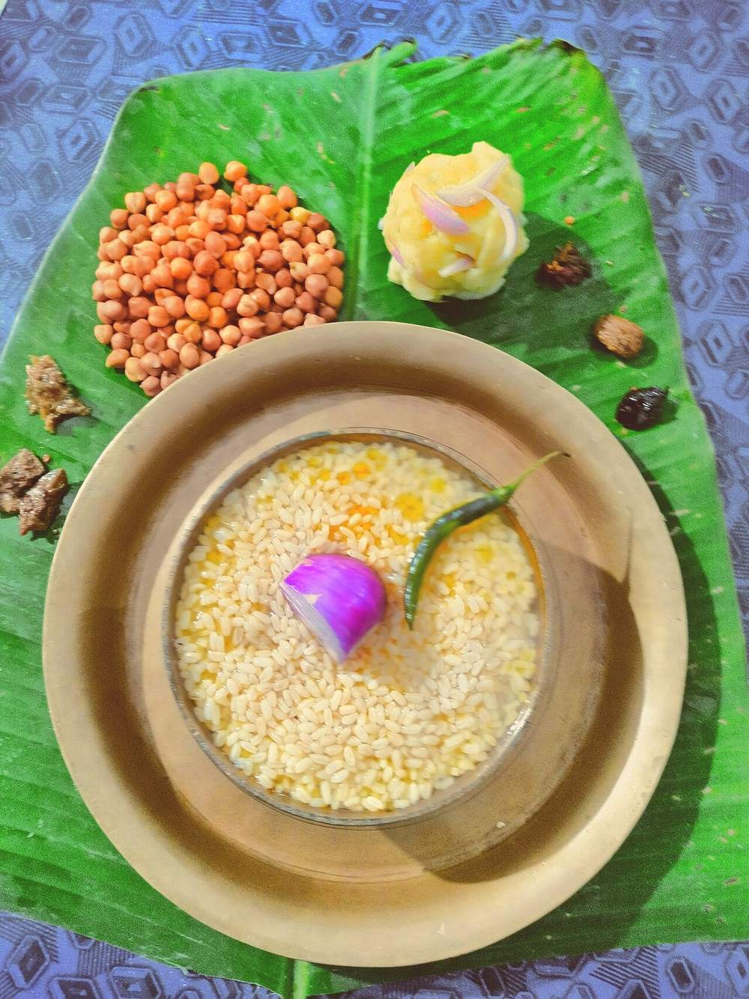

Aloo Pitika
mashed potato sharpened with raw mustard oil and onion, the plate-partner to every assamese meal

Prep10 min
Cook20 min
Total30 min
Serves4
Difficultyeasy
Allergens: none of the common ones
Ingredients
Quantities for 4.
- 600g, whole and unpeeled Potato
- 2 tbsp, raw and unheated Mustard Oilunheated is the whole point — the pungency is the seasoning
- 1 small, very finely chopped Onion
- 2, finely chopped Green Chilli
- 3 tbsp, chopped Coriander Leavesoptional
- 1/2, juiced Lemonoptional
- to taste Salt
- 1.5 litres for boiling Water
Equipment
stovetop, pressure cooker
Before you start
- Boil the potatoes whole and in their skins. Peeled and cubed, they take on water and the pitika goes wet and gluey.
- Chop the onion as fine as you can and, if raw onion bothers you, soak it in cold water 5 minutes and squeeze it dry before it goes in.
- Have the mustard oil at room temperature. It never sees heat in this dish.
Method
- Boil the whole potatoes in well-salted water 20 minutes, until a knife slides to the centre with no push.Start them in cold water so they cook evenly rather than splitting at the edges.
- Drain and peel them while still hot — the skins slip off between your fingers.
- Mash with your hand or a fork while warm, leaving a little texture. Do not use a blender.A blender works the starch and turns the mash to glue within seconds.
- Pour the raw mustard oil straight over the warm mash and work it in until the mash looks glossy and smells sharp.
- Fold in the onion, green chilli, coriander and salt.
- Add the lemon juice, taste, and correct the salt — it needs more than you think against the plain rice it is eaten with.
- Shape into a low mound on the plate and let it stand 5 minutes so the onion softens into the potato.
Storage
Best the day it is made, but keeps 2 days refrigerated. Bring it back to room temperature before serving and refresh it with a teaspoon of raw mustard oil — do not reheat, it goes pasty.
Nutrition Good estimate
| Per serving209 g | Per 100 g | |
|---|---|---|
| Calories | 196 kcal | 94 kcal |
| Protein | 4.0 g | 1.9 g |
| Carbohydrate | 30.5 g | 14.6 g |
| of which sugars | 3.2 g | 1.5 g |
| Fibre | 4.1 g | 2.0 g |
| Fat | 7.3 g | 3.5 g |
| of which saturated | 0.9 g | 0.4 g |
| of which unsaturated | 5.8 g | 2.8 g |
Worked out from the listed quantities; most of the ingredient list could be weighed. Estimated from raw ingredients using USDA FoodData Central. Cooking changes are not modelled, and added salt is excluded, so sodium is not given.
Recipe v1.0.0, last updated 2026-07-31. Curated for Khaana and kept under version control.